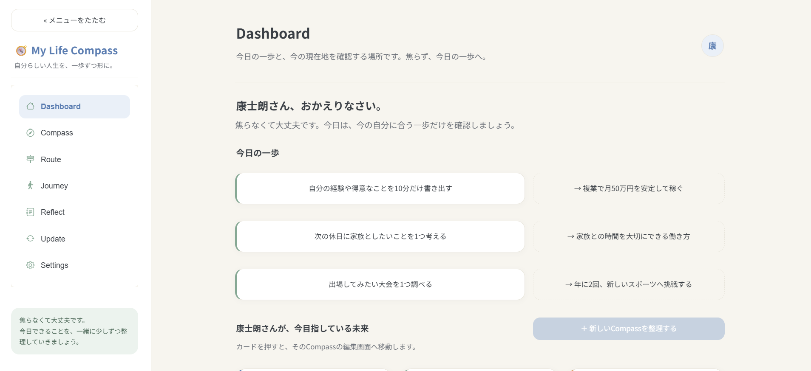
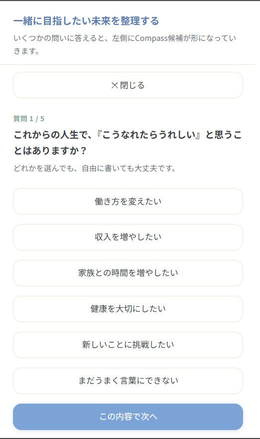
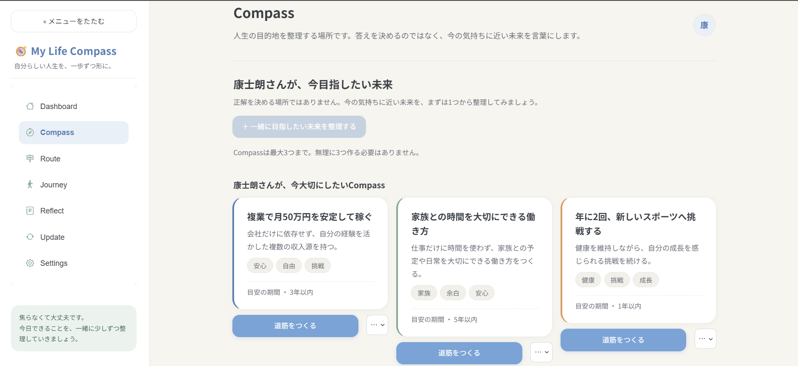
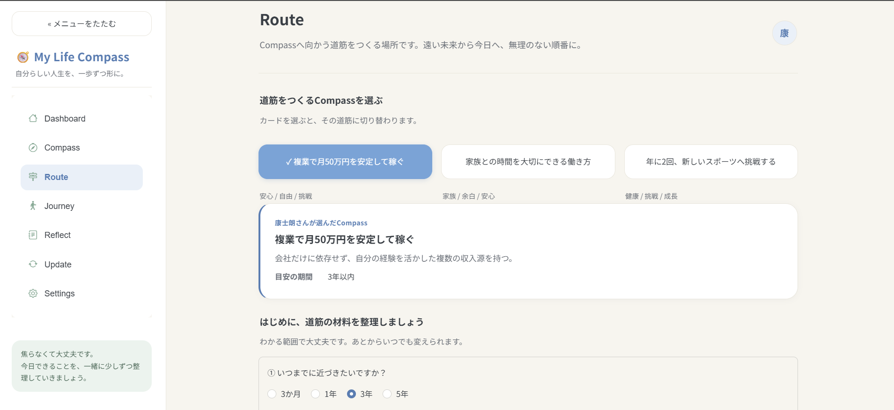
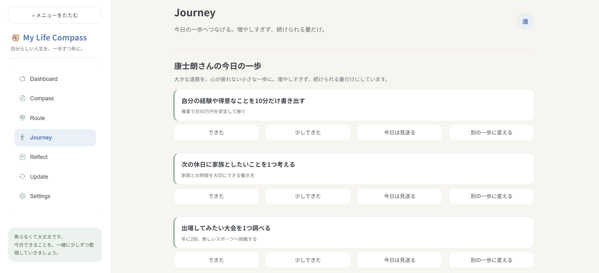

人生とキャリアの意思決定に、そっと伴走する
自分らしい人生を、
一歩ずつ形に。
仕事や将来のことを、一人で抱え込まなくて大丈夫。
私自身も、仕事や人生に悩み、
立ち止まった経験があります。
だからこそ、答えを押しつけるのではなく、
あなたの想いを一緒に整理し、
自分らしい一歩を見つけられるよう伴走します。


答えを教えるサービスではありません。無理な営業も行いません。
こんなお悩み、ありませんか
一人で考えても、
答えが出ないときへ。
転職したいけれど、本当は何がしたいのか分からない。
今の仕事がつらい。このまま続けていいのか迷っている。
このままでいいのか、自分でもよく分からないまま日々が過ぎる。
将来のことを考えると、漠然とした不安が消えない。
一人で考えても、頭の中が堂々巡りで前に進めない。
転職活動を始めたけれど、思うようにいかない。
そのモヤモヤは、あなた一人で抱えなくて大丈夫です。
対話を通して、頭の中を少しずつ整理していきましょう。
My Life Compass が大切にしていること
答えを教えるのではなく、
一緒に見つけていく。
My Life Compass は、あなたの人生の答えを決める場所ではありません。
価値観を整理し、進みたい方向を見つけ、自分で選べるようになるまで伴走します。
答えを押し付けない
「こうすべき」とは言いません。あなたの気持ちや価値観を大切に、選択肢を一緒に並べていきます。
一緒に整理する
頭の中にあるモヤモヤを、対話を通して言葉にします。話すうちに、自分の考えが見えてきます。
自分で選べる状態をつくる
目指すのは、依存ではなく自立。あなたが自分の力で選び、進んでいけるようになるまで支えます。
私たちが目指しているのは、
「人生を変えること」ではありません。
STEP 01 ── まずはここから
無料相談
オンラインで、いまの悩みを一緒に整理する時間です。
仕事・転職・人生・将来・価値観・キャリアなど、なんでも構いません。
- LINE通話で最大60分
- カメラオフでも参加OK
- 無理な勧誘なし
ここで、すること
- いま感じている悩みや迷いを言葉にする
- 大切にしている価値観を一緒に整理する
- これから進みたい方向のヒントを見つける
- あなたに合ったサポートをご提案する
※ ここでは無理な営業は行いません。相談だけでも大丈夫です。
STEP 02 ── 転職活動中の方へ
転職活動を、
あなたの言葉で。
転職活動中の方向けに、必要なときだけ使える単発のサポートです。
「うまく伝わらない」を、一緒に乗り越えていきます。
履歴書・職務経歴書の添削
「作成代行」ではありません。あなたの経験や考えを大切にしながら、 応募先へきちんと伝わる内容へ、一緒に整えていくサービスです。
- 履歴書と職務経歴書の内容確認
- 経験や強みの整理
- 伝わりにくい表現の修正提案
- 応募先を意識した改善アドバイス
- 添削結果のフィードバック
面接対策・模擬面接
一方的に正解を教えるのではなく、あなた自身の経験や考えが相手に伝わるよう、 一緒に整理していくサービスです。
- Zoomで実施
- 応募企業を想定した模擬面接
- 回答内容の整理
- 話し方や伝え方のフィードバック
- 面接で不安に感じている部分の相談
どのサポートが合うか分からないときも、
まずは無料相談で一緒に考えられます。
STEP 03 ── 人生全体を整理したい方へ
継続伴走プログラム
🔧 現在準備中
話して終わりではなく、行動と振り返りを続けていくためのサポートです。
現在は正式提供に向けて準備を進めています。
My Life Compass を使いながら、
一歩ずつ整理していく。
セッションでは、いまの状態を一緒に確認していきます。 My Life Compass は単体で完結する商品ではなく、対話を重ねながら 自分の考えや価値観を一緒に整理していくためのサポートツールです。
一度きりの相談で終わらせず、行動と振り返りを続けることで、
少しずつ「自分で選べる」実感が育っていきます。
継続伴走プログラム
※正式提供時に、内容・料金が変更となる場合があります。
予定している内容
- My Life Compass を使った個別セッション全4回（1回60分）
- 過去の経験や現在の悩みの整理
- 大切にしたい価値観の言語化
- これから進みたい方向の整理
- 具体的な行動への落とし込み
- 期間中の公式LINEでのメッセージサポート
- セッション内容に応じた振り返り
提供開始のお知らせは 公式LINE でご案内します。
My Life Compass でできること
現在地から未来まで、
一本の線でつなぐ。
継続伴走のセッションで使う、5つの体験です。
価値観と、目指したい未来を言葉にする。
正解を決める場所ではありません。いくつかの問いに答えるうちに、 「大切にしたいこと」「こうなれたらうれしい」が少しずつ言葉になっていきます。
- 大切にしたいこと・やりたいことを整理
- 目指したい未来は、最大3つまで
- 対話で問いかけ、整理を助ける

未来までの道筋を、一緒に整える。
遠い未来から今日へ、無理のない順番に。5年後から今日まで、 柔らかいタイムラインでつなぎます。急かすためのものではありません。
- 5年 → 3年 → 1年 → 今月 → 今週の道筋
- 必要なお金・スキル・経験もそっと補足
- いつでも見直せる、しなやかな設計

心が疲れない、今週の一歩。
大きな道筋を、続けられる小さな一歩に。増やしすぎず、いまできる分だけ。 できたことを、責めずに認めていきます。
- 今週の一歩は、無理のない件数だけ
- 「できた」「少しできた」もやさしく記録
- Todoアプリのように急かさない

歩みをふりかえり、できたことを認める。
比べる相手は、他人ではなく少し前の自分。うまくいかなかった日も含めて、 セッションでやさしく振り返り、次の一歩へつなげます。
変化に合わせて、今の自分に見直す。
状況も気持ちも移り変わっていくもの。価値観や道筋を、そのときの自分に合わせて いつでも更新できます。決めるのは、いつもあなた自身です。
利用の流れ
無料相談から、
あなたに合うペースで。
-
1
まずは無料相談
オンラインで、いまの悩みを一緒に整理します。うまく言葉にできなくても大丈夫。ここから始まります。
-
2
必要に応じて、転職サポート
転職活動中の方は、履歴書・職務経歴書の添削や面接対策を、必要なときだけ単発でご利用いただけます。
-
3
人生全体を整えたいなら、継続伴走
My Life Compass を使いながら、毎週または隔週のセッションで、行動と振り返りを続けていきます。
どの段階から、どこまで進むかは、あなた次第。
いつでも「まずは相談だけ」で大丈夫です。
よくある質問
Q&A
無料相談では、何をするのですか？
オンラインで、いま感じている悩みや迷いを一緒に整理する時間です。仕事・転職・人生・将来・価値観・キャリアなど、テーマは自由です。話すうちに、自分の考えが少しずつ見えてきます。
相談だけでも大丈夫ですか？無理な勧誘はありませんか？
もちろん大丈夫です。無理な営業や勧誘は行いません。相談の中で、もしあなたに合いそうなサポートがあれば、選択肢としてお伝えするだけです。決めるのは、いつもあなた自身です。
まだ転職するか決めていませんが、利用できますか？
はい。「転職するかどうか、まず整理したい」という段階こそ、無料相談が役立ちます。今の状況や気持ちを一緒に言葉にしながら、進みたい方向を探していきましょう。
やりたいことが、はっきりしていなくても大丈夫ですか？
大丈夫です。「まだうまく言葉にできない」から始めて構いません。いくつかの問いに答えるうちに、少しずつ気持ちが整理されていきます。無理に目標を決める必要はありません。
単発サポートと継続伴走プログラムの違いは？
単発サポートは、転職活動中の方向けに、履歴書添削や面接対策を必要なときだけ使えるサービスです。継続伴走プログラムは、人生全体を整理していきたい方向けに、My Life Compass を使いながら毎週または隔週で伴走する継続サービスです。
答えを教えてもらえるのですか？
いいえ。My Life Compass は答えを教えるサービスではありません。あなたの価値観を整理し、進みたい方向を見つけ、自分で選べるようになるまで伴走します。目指すのは、あなたが自分の力で選べるようになることです。
自分らしい人生を、一歩ずつ形に。
一人で悩み続けなくて大丈夫。
まずは、頭の中を一緒に整理する無料相談から始めましょう。
※ 無理な営業は行いません。相談だけでも大丈夫です。本ページは My Life Compass（プロトタイプ）を紹介するためのものです。